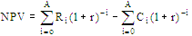
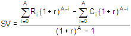

In this Topic Hide
In assessing the economics of silviculture investments, we are concerned not only with the stand's conversion value at each harvest age, but also with any costs associated with the regeneration and tending of the stand. We also need to be able to compare costs and benefits which occur in different time periods. These comparisons can be made by converting the future benefits and costs to equivalent present values. To do this, we discount the future values using a discount rate. The discount rate, known as the social discount rate, reflects society's preferences for present versus future consumption. It allows us to compare various flows of benefits and costs occurring over time in a consistent and logical manner. Thus, FAN$IER estimates the expected flow of benefits and costs from the stand management regime, and discounts each to present values to determine the net present value and site value of the regime.
A silviculture treatment's net present value (NPV) is the sum of the discounted benefits that the treatment yields, minus the sum of the discounted costs of the treatment. This can be written mathematically as:

where Ri = revenue, or benefit,
received at stand age i,
Ci = cost incurred at stand age
i,
r = social discount rate, and
A = age of harvest.
Stand regeneration costs occur in year zero, stand tending costs at the prescribed age and the conversion value in the year of harvest.
We cannot compare single-rotation NPVs of different regimes having different harvest ages, because use of the land differs over time. We can overcome this problem by considering the value of the site. Site value (SV) represents the maximum amount that someone would be willing to pay for bare land if the land was devoted to producing an infinite series of rotations of identical growing regimes (Faustmann, 1849). Site value is also referred to in the literature as soil rent, bare land value, and soil expectation value (and variations thereof). It is the net present value of this infinite series of identical silvicultural regimes. The general formula for determining the SV is (Gregory, 1972):

The harvest age will obviously affect the stand's estimated SV. The harvest age at which the stand's SV is maximized is known as the economic rotation age. To assess alternative stand management regimes, compare the SVs of the alternatives at their respective economic rotation ages. The management alternative which yields the highest SV is the optimal regime. If, however, some forest management constraint or objective requires that the stand be harvested at an age other than the economic rotation age (i.e. the culmination of MAI), then we should compare the SVs of the alternative regimes at the desired rotation age. You can also determine the economic loss of not harvesting at the economic rotation age by comparing the SV at the economic rotation age to the SV achieved at the desired rotation age.
In calculating NPVs and SVs, all benefits and costs are discounted to the default base age, which is zero. You can, however, change the base age to the age at which pre-commercial thinning takes place or to some other age. Using the PCT age, you can examine the efficiency of just the PCT treatment, which would be appropriate for an established stand. Using another age could also be appropriate when, for example, you wish to establish the value of an immature stand of a given age. Note that all silviculture costs and other costs occurring prior to the base age are treated as sunk costs and are ignored in the NPV and SV calculations.
Faustmann, M., 1849. "Calculation of the value which forest land and immature stands possess for forestry." Allegeine Forst- und Jagd-Zeitung pp. 441-455. The English translation can be found in Linnard, W. and M. Gaine (1968) Martin Faustmann and the evolution of discounted cash flow, Commonwealth Forestry Institute, Institute Paper No. 42, University of Oxford.
Gregory, R.G., 1972. Forest resource economics. John Wiley & Sons. Inc., New York.